-
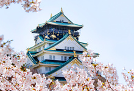京都秘境～吉田琉璃寺．天橋立．花鄉ＯＫＡＤＡ鬱金香．夢幻櫻花天空之城五日即刻出發
-
京都秘境～吉田琉璃寺．天橋立．花鄉ＯＫＡＤＡ鬱金香．夢幻櫻花天空之城五日即刻出發
-
京都秘境～吉田琉璃寺．天橋立．花鄉ＯＫＡＤＡ鬱金香．夢幻櫻花天空之城五日即刻出發
-
京都秘境～吉田琉璃寺．天橋立．花鄉ＯＫＡＤＡ鬱金香．夢幻櫻花天空之城五日即刻出發
-
京都秘境～吉田琉璃寺．天橋立．花鄉ＯＫＡＤＡ鬱金香．夢幻櫻花天空之城五日即刻出發
-
京都秘境～吉田琉璃寺．天橋立．花鄉ＯＫＡＤＡ鬱金香．夢幻櫻花天空之城五日即刻出發
-
京都秘境～吉田琉璃寺．天橋立．花鄉ＯＫＡＤＡ鬱金香．夢幻櫻花天空之城五日即刻出發
-
京都秘境～吉田琉璃寺．天橋立．花鄉ＯＫＡＤＡ鬱金香．夢幻櫻花天空之城五日即刻出發

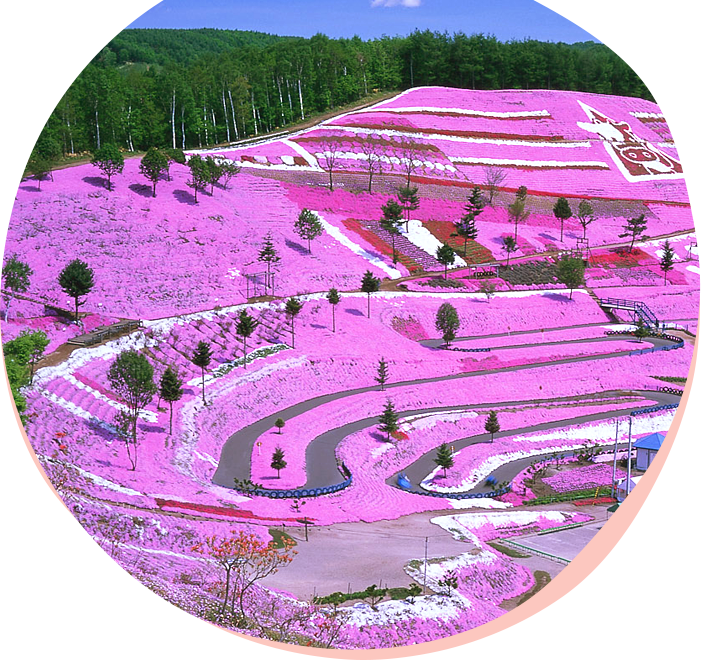
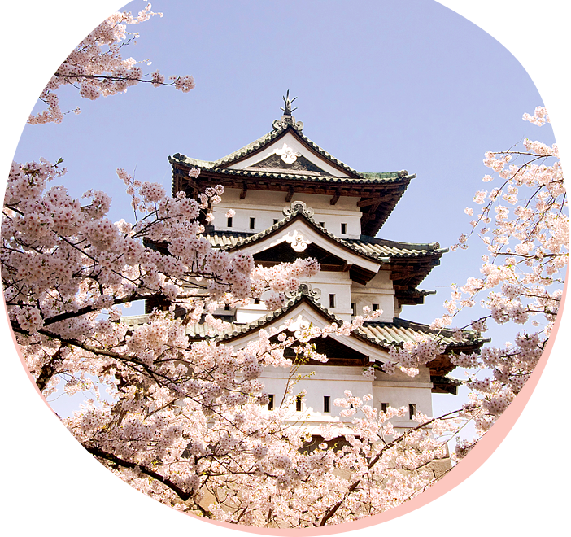
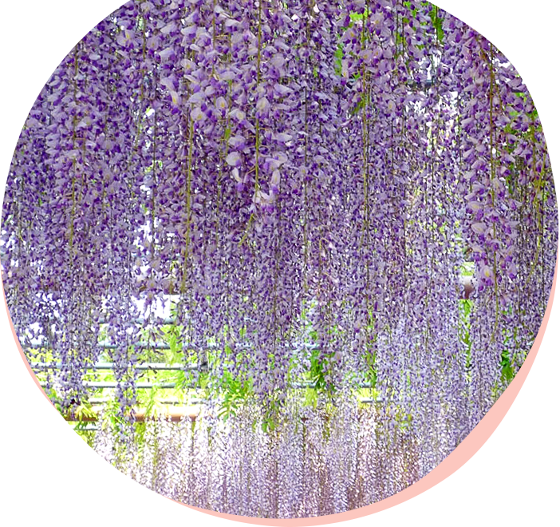
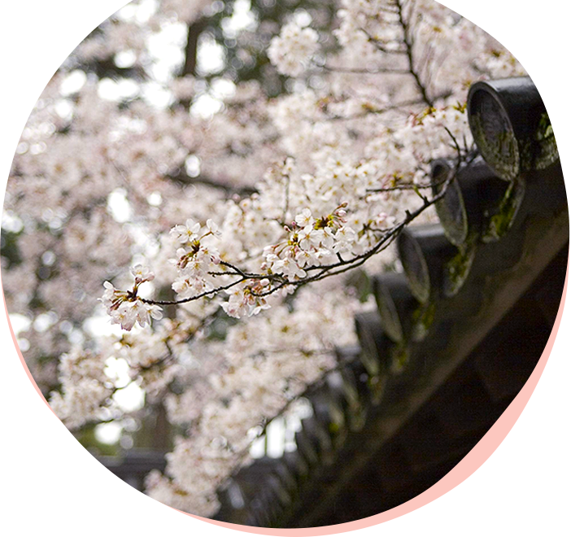
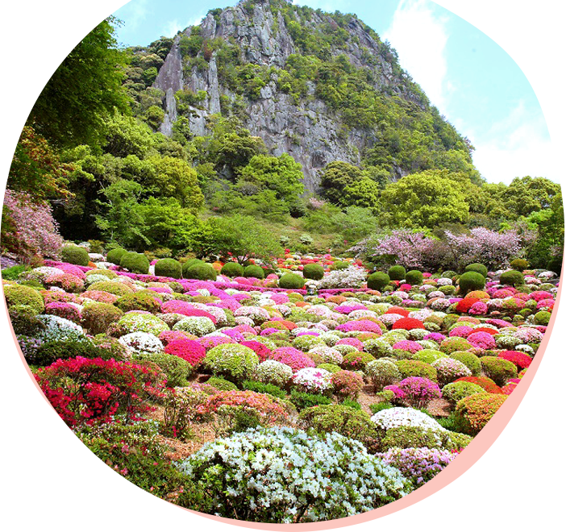
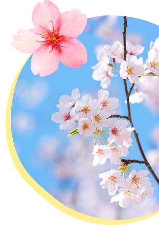


北海道 櫻花隧道／登別市
東北 弘前公園／青森縣
東京 上野恩賜公園／東京都
名古屋 彥根城／滋賀縣
大阪 大阪城公園／大阪市
九州 御船山樂園／佐賀縣
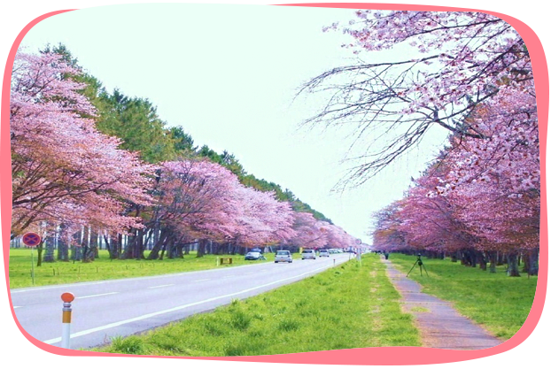
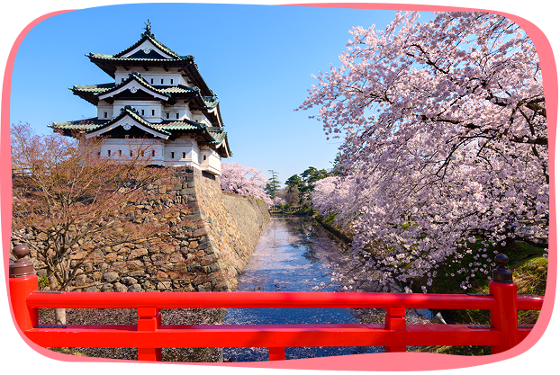
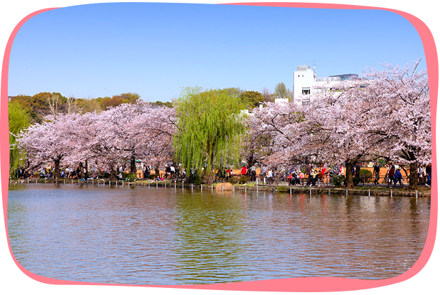
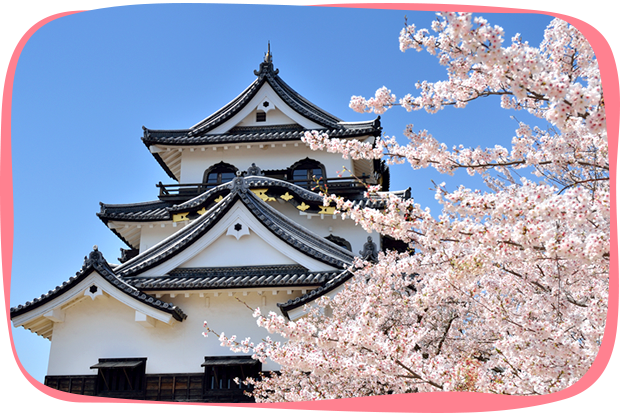
 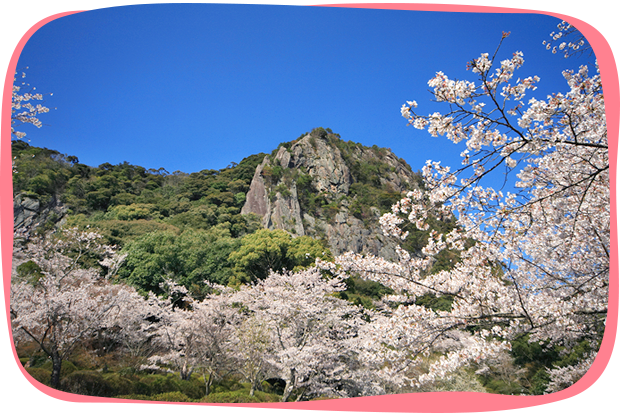
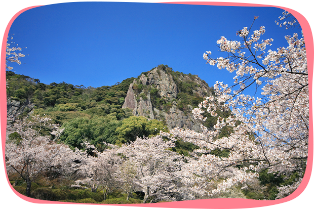
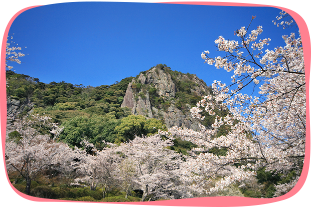
- 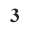
2000株淡粉色山櫻花溫柔迎賓，前往登別溫泉鄉的大道兩側並排綻放著春季應景風物詩；當地居民精心栽植長達8公里浪漫的花見隧道，年復一年地讓造訪登別溫泉，以及幕名前來賞櫻的旅人，感受一期一會的幸福。
日本賞櫻百選名所，有「日本第一櫻花祭」的美譽，亦被選為「日本風景百選」，並列「百大名城」之一；園內50餘種，共約2600株櫻花，將東北地方現存唯一天守閣襯托得美不勝收；每年春季都吸引超過200萬旅客前來朝聖！
日本第一座公園，因為是由天皇將皇族領地下賜與東京市管理，故稱為「恩賜公園」，不但是超人氣「賞櫻百選」勝地，同時坐落園區內的博物館、美術館、科學館、動物園、藝術大學及寺廟，也為春季櫻景增添更多豐富元素。
日本「四大名城」之一，天守閣被指定為國寶；因為月色下的城堡景象被列為「琵琶湖八景」的第七景，又被稱為「月明之城」。城內1200株櫻花燦爛滿開時，與木造天守互相襯托出古色古香，優美動人。
名將「豐臣秀吉」建造，大阪的精神象徵；圍繞特別史跡建置的園區內，各種公共設施與綠地花圃交相點綴，是大阪市民最喜愛的休憩場所。每逢花季，4300株櫻花燦爛綻放，被列為「賞櫻百選」名所之一。
九州最大型櫻花祭開催地點，高人氣的賞花名勝，相傳因為山形與中國唐朝海船相似，故命名為御船山；每年春天2000餘棵櫻花樹盛開，15萬坪繽紛花園與山光水色相互輝映妝點，猶如走入廣闊的水墨畫卷世界，壯麗非凡。

北海道 東藻琴芝櫻公園／網走郡
東京 富士芝櫻祭／山梨縣
九州 豪斯登堡／長崎縣
 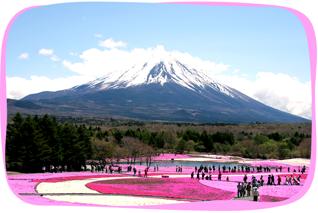
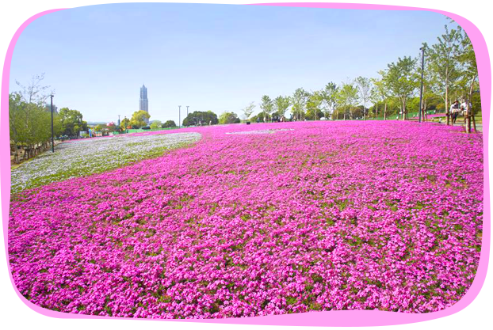
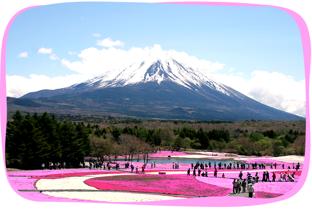
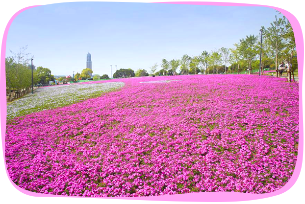
開拓者-中鉢末吉先生獨自耗費8年時間，在藻琴山區丘陵地一株一株，一吋一吋打造並維護這片令人震撼粉色天堂，曾遭遇的困難可以想見，但在他引退之後，過世之前，東藻琴芝櫻公園不但成為初夏觀光勝景，也成為擇善固執，追求至美境界的佳話。
以世界遺產-富士山作為遠景，共80萬株芝櫻於花祭期間滿開，如鮮豔顏料潑灑在廣闊平原上，與遠山高潔互相襯托，非常壯觀，隨手拍下都是明信片等級作品！共同開催的「富士山美食嘉年華」，販售風味美食及獨家伴手禮，色香味一應俱全。
春季時擁有九州最大規模芝櫻花毯，同時也是日本三大主題樂園之一，25萬株5000株芝櫻，在初夏和煦陽光下的花祭期間爭豔綻放，仿造荷蘭鄉村造景的園區內，粉嫩交織鋪展整個小歐洲風情度假勝地。
東京 日立海濱公園／茨城縣
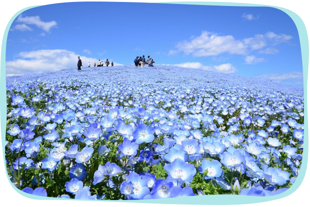
國營常陸海濱公園佔地遼闊，而最負盛名的粉蝶花就於春季極致綻放在此，450萬株滿開於微風中搖曳如花浪，被稱為死前必去的夢幻景點，非常令人感動。由於「常陸」與「日立」在日文中同音，故又被稱為日立海濱公園。

東京 足利花卉公園／栃木縣
名古屋 濱名湖花博／靜岡縣
大阪 平等院／宇治市
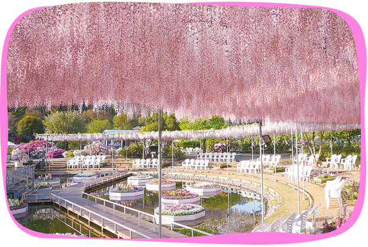
 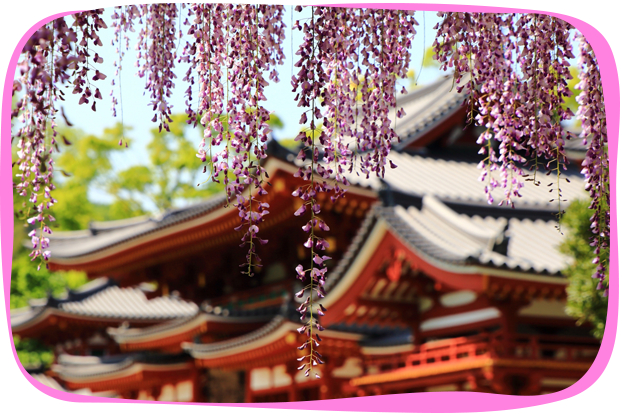
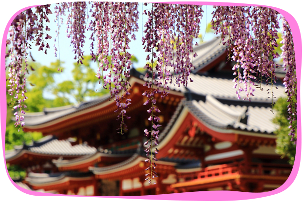
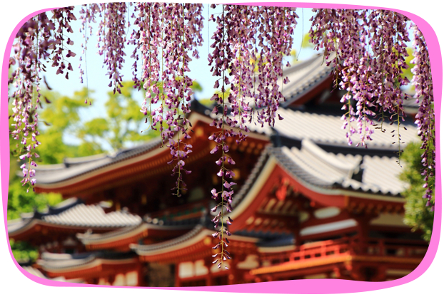
CNN評選為「世界10大夢幻旅遊景點」 ！350株紫藤花在花架上盛開，垂墜搖曳，形成魅惑的賞花空間；夜間燈飾掩映，光影與花彩共演神秘幽微氛圍，被認定為「日本夜景遺產」之一，每年訪客逾百萬人次。
從04年開始舉辦的花卉博覽會，利用濱名湖畔傲人的自然風景，形塑無造作且渾然天成的精神，會場內五彩繽紛的各色花田，爭妍鬥艷又能和諧呈現盛典內涵；除了展出熱門的紫藤，鬱金香與櫻花的綻放也極度壯觀。
相傳平等院的建造精神，是日人對西方極樂淨土的崇信與實現；沿著宇治川畔興建的木構廟堂，不但被認定為世界遺產，主建築「鳳凰堂」也是日本國寶之一，平等院的紫藤花每年四月綻放，搖曳的垂穗與鳳凰堂共舞畫面，造訪必收眼底。
北海道 上湧別鬱金香公園／紋別郡
大阪 花鄉OKADA／京都府
九州 豪斯登堡／長崎縣
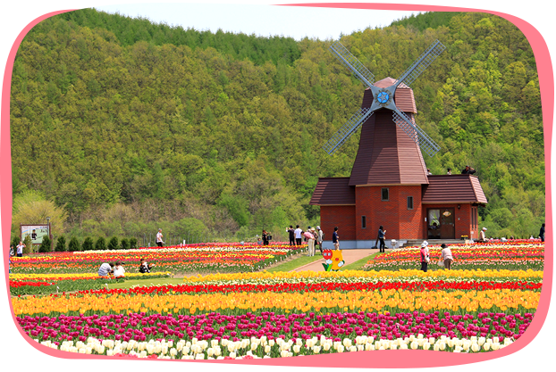
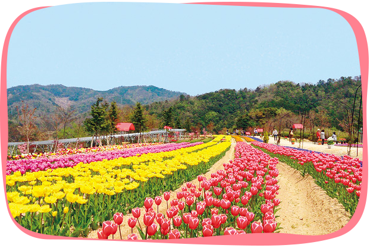
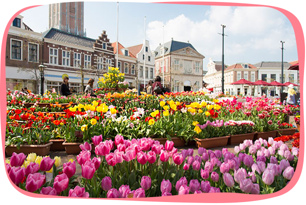
120萬株共約200餘花種，在緊鄰鄂霍次克海的園區內，盛大綻放成歐州田園風格的奢華畫境。各種鬱金香都以童話故事角色命名，包括荷蘭原生珍稀花種，色澤鮮豔，瓣型豐富，拼綴交織成精妙設計的錦簇花團，彷彿巧匠作畫於大地之上。
每年4到6月限期開放，達人推薦賞花私房景點！位於「海之京都」地區，五倍甲子園球場規模，櫻花、芝櫻、紫藤與鬱金香隨季節更迭輪番盛大綻放；尤其十萬朵鬱金香花海，燦爛繽紛，完美詮釋暖春迷人況味。
「鬱金香節」馳名國際，歐風宮殿前由最高庭園設計師所監修的花壇，匠心獨具；最巨型、最古老與最新配育的花種，交相點綴成九州最大規模的花海，百萬株鬱金香在晴空下，或夜間燈飾輝映成花舞展演，都毫不含糊展現鬱金香無窮盡的魅力。